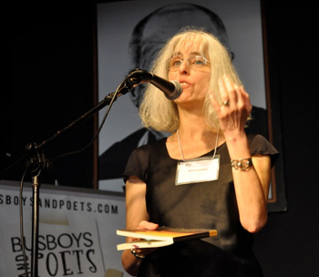

| ||||||||
|
||||||||
|
Praise for Storytelling in Cambodia:
"At their best, these poems are intimately, despairingly human, with fabulous stories to tell." - William T. Vollmann, author of Rising Up and Rising Down “Willa Schneberg is a poet who boldly faces evil and has the courage to express her reactions in art and testimony. The wisdom underpinning her poems is fully earned. We need more such poets who are not deterred from writing about global issues by those who have neither the concern nor the courage to do so themselves. This book will be controversial because it is out of step with the dominant aesthetic of our time, which elevates triviality to exalted ennui. Her elegy for Pol Pot catches the banality of evil as few writers have attempted.” - David Ray, author of The Death of Sardanapalus and Other Poems of the Iraq Wars “The poems in Storytelling in Cambodia record with sensual mindful detail a journey that is as geographically exotic and far-flung as it is spiritually profound. Ms. Schneberg combines first hand witness with Hindu myth to make poems which are by turns brutally documentary and lyrically elegiac, setting Cambodia’s recent tragic history against the backdrop of its ancient past. This is a first book for grown-ups, written by a mature, even wise, human being.” - Peg Boyers, Executive Editor, Salmagundi “Storytelling in Cambodia bears witness, in poem after poem, to the rawness of remembered passion. Willa Schneberg’s poems about Cambodia, where she worked in the early 1990s for the UN, beautifully convey the sensuousness, excitement, and uncertainty of a peculiar, tumultuous time. All of her poems take us with her as she catches often painful experiences in her hands like water from a tap and then transforms them, with transcendent skill, into creations that shimmer in the heat." - David P. Chandler, author of The Tragedy of Cambodian History and Brother Number One: A Political Biography of Pol Pot |
 Reading from "I Go to the Ruined Place: Contemporary Poets in Defense of Global Human Rights" anthology, Split this Rock, March, 2012 |